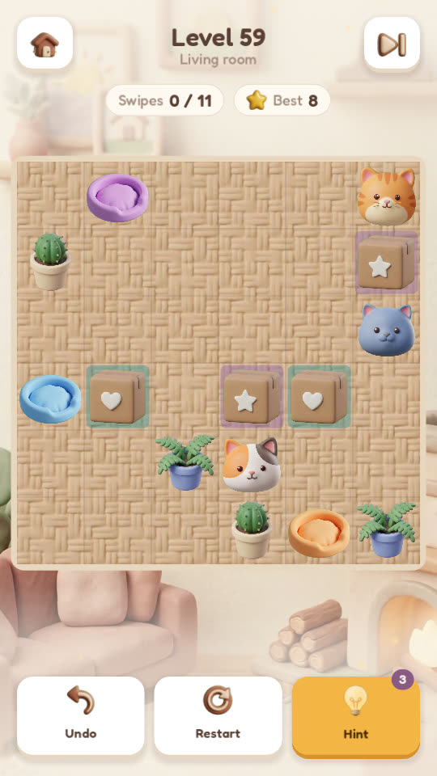

Puzzle of the day: level 59
Today's puzzle is level 59 of Snooze Slide, from the Living room: Ginger the ginger cat, Blue the grey cat and Callie the calico cat on a 6 by 6 floor, with linked cardboard boxes and a few other things in the way. Every cat has to end up asleep on its own bed, and the best solution takes 8 swipes.

What makes this one tricky
There are two different ways to do it in 8. It can be lost in three swipes: after that, no swipe brings every cat to its bed.
New to the game? One swipe moves every cat until something stops it, a cat only falls asleep when it stops on its own bed, and a sleeping cat becomes a wall for the others. The four rules are here.
Hints, one at a time
Hint 1: which cat goes to bed first?
Blue, the grey cat.
Hint 2: the first swipe
Swipe up.
Hint 3: halfway there
After 4 swipes of the best solution, Blue and Callie are asleep.
The solution
Show all 8 swipes
- ↑ up
- ↓ down
- ← left · Blue falls asleep
- ↑ up · Callie falls asleep
- ← left
- ↓ down
- ← left
- ↓ down · Ginger falls asleep
In the game this is level 59; three stars means you matched the 8 swipes.